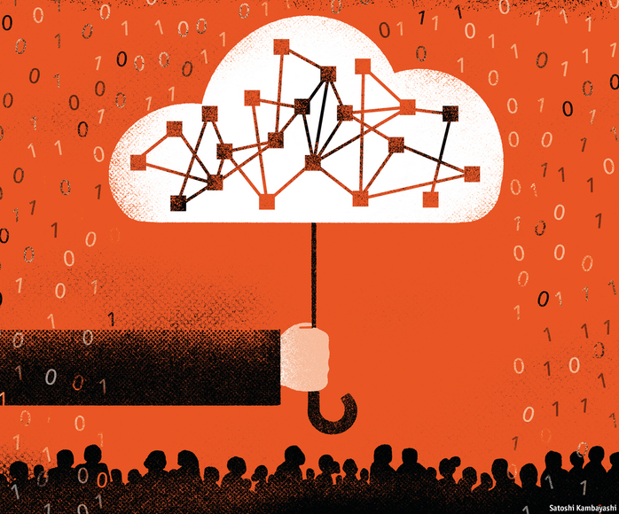
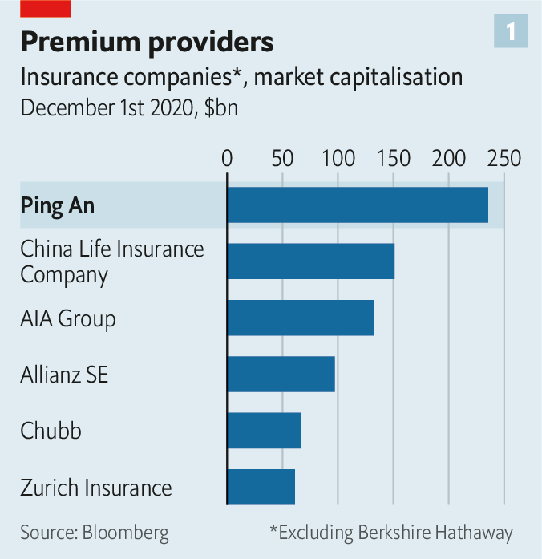
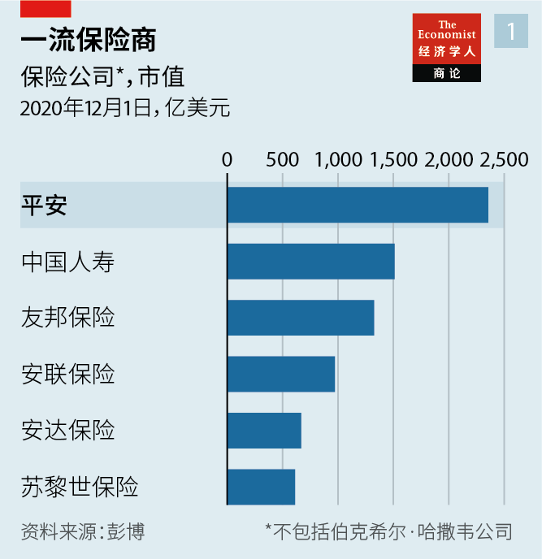
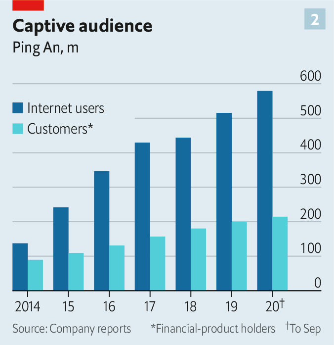
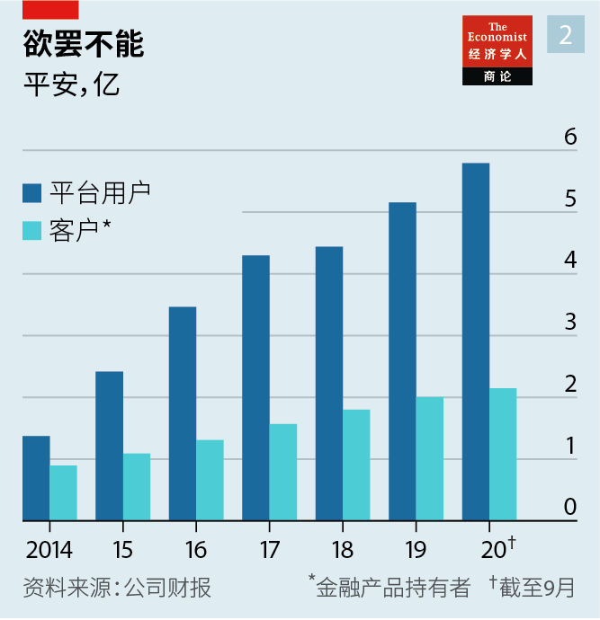
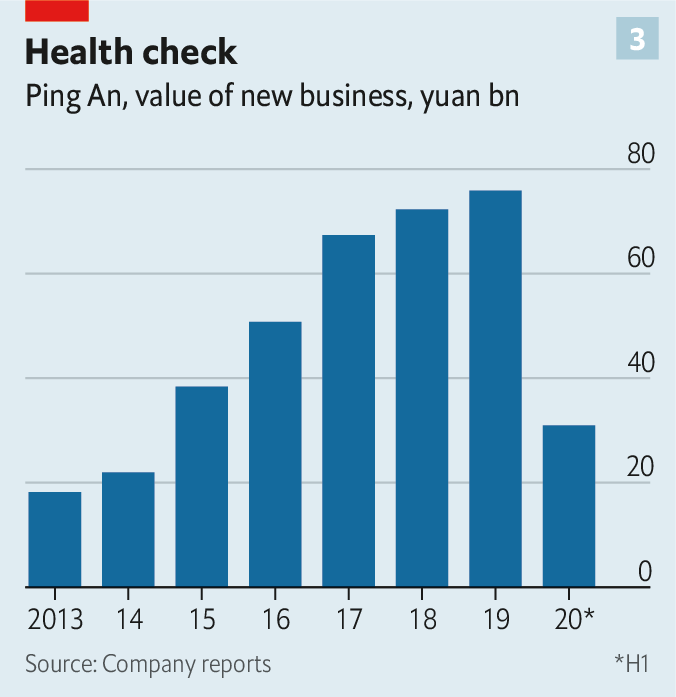
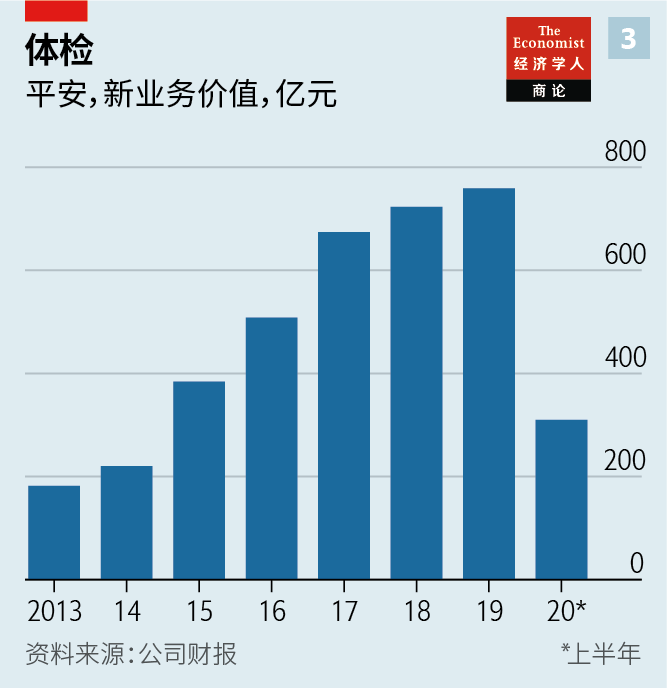

Text
2020-12-20T12:35:52+00:00
Ping An
平安
平安
Metamorphosis
变形记
變形記
The world’s most valuable insurer has transformed itself into a fintech super-app. Could others follow its lead?
全球市值最高的保险公司已经转型为金融科技超级应用。其他公司可能效仿它吗？
全球市值最高的保險公司已經轉型為金融科技超級應用。其他公司可能效仿它嗎？
A JOB INTERVIEW at Ping An is a strange experience. To become an agent at the insurance group, the world’s largest by market capitalisation, candidates must take questions from an intelligent machine. As they respond, their voice, choice of words and gestures are scrutinised for the qualities of the most productive salespeople. After accruing data from millions of such interviews, the firm believes its artificial-intelligence (AI) system can quickly pluck talent and weed out the duds. Judged by the company’s agent-productivity scores, it is working.
平安的求职面试不同寻常。要想成为这家全球市值最高的保险集团的代理人，应聘者必须回答智能机器的提问。他们作答时的声音、措辞和身体语言都会被仔细研判，以确定他们是否具备最高产销售人员的品质。在积累了几百万份这样的面试数据后，平安相信自己的人工智能（AI）系统可以快速择优汰劣。从平安代理人的产能评分来看，这个系统行之有效。
平安的求職面試不同尋常。要想成為這家全球市值最高的保險集團的代理人，應聘者必須回答智能機器的提問。他們作答時的聲音、措辭和身體語言都會被仔細研判，以確定他們是否具備最高產銷售人員的品質。在積累了幾百萬份這樣的面試數據後，平安相信自己的人工智能（AI）系統可以快速擇優汰劣。從平安代理人的產能評分來看，這個系統行之有效。
Just as the recruitment tool offers a glimpse into the future of hiring, Ping An itself may offer a window on to the future of finance. The tool is just one of thousands of applications built by the group’s army of engineers. They support a sprawling array of services, from insurance and banking to health care and education, which this year alone have been used by close to 600m people. No other traditional financial-services group in the world comes close to rivalling Ping An’s ability to develop technologies and deploy them at such a scale.
正如这个招聘工具让人一窥未来的招聘模式那样，平安本身可能也提供了一个眺望金融业未来的窗口。这个工具只是平安集团的工程师大军开发的数千个应用中的一个。这些应用支撑起平安多元扩张的服务，从保险、银行，到医疗和教育等，仅今年一年就有近六亿人使用这些服务。在如此大规模开发和部署技术的能力上，世界上找不出哪家传统的金融服务集团可与平安勉强一比。
正如這個招聘工具讓人一窺未來的招聘模式那樣，平安本身可能也提供了一個眺望金融業未來的窗口。這個工具只是平安集團的工程師大軍開發的數千個應用中的一個。這些應用支撐起平安多元擴張的服務，從保險、銀行，到醫療和教育等，僅今年一年就有近六億人使用這些服務。在如此大規模開發和部署技術的能力上，世界上找不出哪家傳統的金融服務集團可與平安勉強一比。
The firm, set up by Peter Ma, began life as a small unit at a state-owned enterprise in Shenzhen, selling bosses insurance against worker-compensation claims. It was eventually spun out in 1988. By the mid-2000s it had become one of China’s largest life and property insurers, and attracted investment from HSBC, a bank. Today it is worth 1.5trn yuan ($236bn; see chart 1), and has redefined itself as a technology conglomerate built around an insurance business. It is now the largest investor in HSBC.
由马明哲创办的平安起初是深圳一家国有企业下属的一个小部门，向企业老板销售劳工保险。它最终于1988年脱离出来，成为一家独立公司。到2005年前后，它已成为中国最大的人寿和财产保险公司之一，并吸引了汇丰银行的投资。如今，它的市值为1.5万亿元（见图表1），并已把自己重新定义为一家围绕保险业务而建的科技企业集团。它现在成了汇丰的第一大股东。
由馬明哲創辦的平安起初是深圳一家國有企業下屬的一個小部門，向企業老闆銷售勞工保險。它最終於1988年脫離出來，成為一家獨立公司。到2005年前後，它已成為中國最大的人壽和財產保險公司之一，並吸引了滙豐銀行的投資。如今，它的市值為1.5萬億元（見圖表1），並已把自己重新定義為一家圍繞保險業務而建的科技企業集團。它現在成了滙豐的第一大股東。
Three things distinguish Ping An’s operating model from that of a standard insurer: its vast platform of services; its approach towards its hundreds of millions of users and customers; and, underpinning it all, its technological prowess. Take its array of subsidiaries first. The firm sells life and health insurance, which in the first three quarters of the year accounted for 67% of net profit. It provides health care through Good Doctor, its digital-medicine group. Customers can park their cash with Ping An’s bank or invest it through Lufax, its wealth-advisory arm (which listed in New York on October 30th). They can buy a car or sign up for education services, and then finance the payments through Ping An’s consumer-credit unit.
相比一般的保险公司，平安的运营模式有三大不同：庞大的服务平台、它对待数亿用户和客户的方式，以及支撑这一切的技术实力。先来看看它的子公司阵列。平安的人寿和健康保险业务贡献了公司今年前三季度净利润的67%。它通过旗下的数字医疗集团平安好医生提供医疗保健服务。客户可以把现金存入平安银行，也可以通过它的理财咨询机构陆金所（10月30日在纽约上市）进行投资。他们可以买车或报名参加教育服务，通过平安的消费信贷部门为这些开销付费。
相比一般的保險公司，平安的運營模式有三大不同：龐大的服務平台、它對待數億用戶和客戶的方式，以及支撐這一切的技術實力。先來看看它的子公司陣列。平安的人壽和健康保險業務貢獻了公司今年前三季度凈利潤的67%。它通過旗下的數字醫療集團平安好醫生提供醫療保健服務。客戶可以把現金存入平安銀行，也可以通過它的理財諮詢機構陸金所（10月30日在紐約上市）進行投資。他們可以買車或報名參加教育服務，通過平安的消費信貸部門為這些開銷付費。
The sheer breadth of services on offer allows Ping An to treat customers more as a social-media firm would, rather than an insurer—the second distinctive feature of its business model. Unusually for a financial institution, Ping An considers the majority of people buying its products to be users instead of customers. They may buy a health service from Good Doctor or a car from Autohome, its car-purchasing app, contributing to the company’s data pool, yet remaining outside its core customer base. “You don’t have to jump through hoops. All you need to do is download our app,” says Jessica Tan, one of the group’s three co-chief executives. Only when they hold a financial product at one of the core units of the company, such as an insurance policy, do users become customers.
如此广泛的服务范围让平安能够更多地以一家社交媒体公司而非保险商的身份对待客户——这是它商业模式的第二个独特之处。平安把购买它产品的大多数人视为用户，而不是客户，这在金融机构中比较罕见。他们可能会从平安好医生购买医疗服务，或者通过它的购车应用汽车之家买车，为平安的数据池添砖加瓦，却仍处于它的核心客户群之外。“你不用大费周章。只需要下载我们的应用就好。”集团三位联席CEO之一的陈心颖表示。只有当他们在平安的一项核心业务上拥有金融产品时，比如持有保单，用户才会成为客户。
如此廣泛的服務範圍讓平安能夠更多地以一家社交媒體公司而非保險商的身份對待客戶——這是它商業模式的第二個獨特之處。平安把購買它產品的大多數人視為用戶，而不是客戶，這在金融機構中比較罕見。他們可能會從平安好醫生購買醫療服務，或者通過它的購車應用汽車之家買車，為平安的數據池添磚加瓦，卻仍處於它的核心客戶群之外。“你不用大費周章。只需要下載我們的應用就好。”集團三位聯席CEO之一的陳心穎表示。只有當他們在平安的一項核心業務上擁有金融產品時，比如持有保單，用戶才會成為客戶。
By allowing hundreds of millions of people to dip their toes in its product offering, Ping An has created a pool of users that can be targeted for sales of more sophisticated products. More than 578m people used its platform in the first nine months of the year (see chart 2). Some 214m were customers who had contractual agreements with the company. The rest were considered users. In the first half of the year, about 35% of its 18m new customers were sourced from its users. As the company has won over more users, that percentage has risen steadily in recent years.
通过让数亿人先尝试自己的某个产品，平安已经创建了一个可定向销售更复杂产品的用户池。今年前九个月，超过5.78亿人使用了它的平台（见图表2）。其中约2.14亿人与平安签约，成为它的客户。其余的人被视为用户。今年上半年，平安的1800万新客户中有约35%来自用户。随着平安不断吸引到更多用户，这一比例近年稳步攀升。
通過讓數億人先嘗試自己的某個產品，平安已經創建了一個可定向銷售更複雜產品的用戶池。今年前九個月，超過5.78億人使用了它的平台（見圖表2）。其中約2.14億人與平安簽約，成為它的客戶。其餘的人被視為用戶。今年上半年，平安的1800萬新客戶中有約35%來自用戶。隨着平安不斷吸引到更多用戶，這一比例近年穩步攀升。
Ping An is also becoming better at the lucrative business of “cross-selling”, or selling customers more products from other parts of the group, which increases income without incurring the cost of acquiring new clients. The share of retail customers that have contracts with more than one subsidiary rose from around 19% in 2015 to about 37% in June. That puts Ping An about 20 percentage points above the average cross-selling rate for insurers in Asia, according to Bain, a consulting firm.
平安也越来越擅长利润丰厚的“交叉销售”，也就是向客户销售更多本集团其他部门的产品，这增加了收入，还省去了招揽新客户的成本。与超过一家子公司签约的零售客户占比从2015年的约19%上升到今年6月的约37%。咨询公司贝恩称，这让平安的交叉销售率比亚洲所有保险商的平均值高出约20个百分点。
平安也越來越擅長利潤豐厚的“交叉銷售”，也就是向客戶銷售更多本集團其他部門的產品，這增加了收入，還省去了招攬新客戶的成本。與超過一家子公司簽約的零售客戶佔比從2015年的約19%上升到今年6月的約37%。諮詢公司貝恩稱，這讓平安的交叉銷售率比亞洲所有保險商的平均值高出約20個百分點。
None of this would be possible without Ping An’s technological prowess—the third and by far most important ingredient of its success. AI allows cross-selling pitches to customers to be made when they are most useful, for instance. “The final sale is done by an agent but the system develops the recommendation,” says Henrik Naujoks of Bain. “And it’s done at the right time.”
如果没有平安的科技实力，这一切都不可能实现——这是它成功的第三个也是绝对最重要的因素。例如，AI能确定向客户做交叉推销的最佳时机。“虽然销售最终由代理人完成，但推荐是AI系统做出的，”贝恩的亨利克·瑙约克斯（Henrik Naujoks）表示，“而且时机把握得很准。”
如果沒有平安的科技實力，這一切都不可能實現——這是它成功的第三個也是絕對最重要的因素。例如，AI能確定向客戶做交叉推銷的最佳時機。“雖然銷售最終由代理人完成，但推薦是AI系統做出的，”貝恩的亨利克·瑙約克斯（Henrik Naujoks）表示，“而且時機把握得很准。”
Large banks and insurers often sponsor “fintech incubators” that develop new technologies, or buy in applications that can be patched on to their core operations. HSBC, for instance, hired Identitii, an Australian fintech, this year to build a digital-payments tool. But for regulatory reasons such experiments tend to bering-fenced from the financial institution.
大银行和保险公司经常资助“金融科技孵化器”开发新技术，或者购买可以连接到自己核心业务上的应用。比如，汇丰银行今年请来澳大利亚金融科技公司Identitii为自己开发数字支付工具。但由于监管方面的原因，这类尝试往往都与这家银行的既有业务分隔开来以隔离风险。
大銀行和保險公司經常資助“金融科技孵化器”開發新技術，或者購買可以連接到自己核心業務上的應用。比如，滙豐銀行今年請來澳大利亞金融科技公司Identitii為自己開發數字支付工具。但由於監管方面的原因，這類嘗試往往都與這家銀行的既有業務分隔開來以隔離風險。
Ping An, by contrast, has fully internalised these operations, apparently unafraid of regulatory blowback. The group has a 110,000-strong technology development team—larger than the commercial-banking divisions of all but the biggest banks—including 3,000 scientists. It submitted 4,625 technology patents in the first half of the year alone. The tools developed within the group’s technology unit are often used across the company. These include credit-risk models that use vast stores of data to make quick lending decisions at Ping An’s consumer-finance division, Puhui. Similar data crunching can track a customer’s driving habits through movements detected on a mobile-phone sensor and price car insurance accordingly. More accurate pricing on both fronts saves the company money.
而平安已经完全将这些操作内部化，看起来似乎不担心会触发监管干预。该集团拥有包括3000名科学家在内的多达11万人的技术开发团队，超过了除最大的几家以外一般银行的商业银行部门的规模。仅在今年上半年平安就提交了4625项技术专利。集团技术部门内部开发的工具经常在整个公司使用。其中就包括消费金融部门平安普惠使用的信贷风险模型，它利用海量数据快速做出贷款决策。类似的数据处理工具可以通过手机传感器监测到的活动来追踪客户的驾驶习惯，据此给车险定价。这两方面更精准的定价为公司节省了资金。
而平安已經完全將這些操作內部化，看起來似乎不擔心會觸發監管幹預。該集團擁有包括3000名科學家在內的多達11萬人的技術開發團隊，超過了除最大的幾家以外一般銀行的商業銀行部門的規模。僅在今年上半年平安就提交了4625項技術專利。集團技術部門內部開發的工具經常在整個公司使用。其中就包括消費金融部門平安普惠使用的信貸風險模型，它利用海量數據快速做出貸款決策。類似的數據處理工具可以通過手機傳感器監測到的活動來追蹤客戶的駕駛習慣，據此給車險定價。這兩方面更精準的定價為公司節省了資金。
When large financial firms do develop systems in-house, they jealously guard them from competitors. Mr Ma has turned that notion on its head by transforming Ping An’s technology division into a sales unit and profit centre. When the company developed its own cloud-computing tech for hosting its banking and insurance systems, it eventually turned the technology into products that now serve 630 banks and 100 insurers across China—a “software-as-a-service” model for banking that is often compared to what Amazon Web Services has done for website hosting.
当大型金融公司真的用内部人员自行开发系统时，它们会对竞争对手严加防范。而马明哲颠覆了这一理念，他把平安的技术部门变成了销售部门和利润中心。平安开发出了自己的云计算技术来托管其银行业务和保险系统，最终把这项技术转变成产品，目前为全中国630家银行和100家保险公司提供服务——这种银行业务的“软件即服务”模式常和亚马逊网络服务（AWS）的网站托管相提并论。
當大型金融公司真的用內部人員自行開發系統時，它們會對競爭對手嚴加防範。而馬明哲顛覆了這一理念，他把平安的技術部門變成了銷售部門和利潤中心。平安開發出了自己的雲計算技術來託管其銀行業務和保險系統，最終把這項技術轉變成產品，目前為全中國630家銀行和100家保險公司提供服務——這種銀行業務的“軟件即服務”模式常和亞馬遜網絡服務（AWS）的網站託管相提並論。
Ping An’s lending algorithms facilitated 47.4bn yuan in loans at rival banks in the first half of the year. That unit, renamed OneConnect, went public last year. Another, called Smart City, builds and operates internal systems for hospitals. Local governments in 118 cities buy Ping An’s administrative technology.
平安的借贷算法在今年上半年帮助自己的竞争对手银行总共发放了474亿元贷款。开发算法的部门金融壹账通已于去年上市。另一个叫作智慧城市的部门为医院构建和运营内部系统。118个城市的地方政府购买了平安的管理技术。
平安的借貸算法在今年上半年幫助自己的競爭對手銀行總共發放了474億元貸款。開發算法的部門金融壹賬通已於去年上市。另一個叫作智慧城市的部門為醫院構建和運營內部系統。118個城市的地方政府購買了平安的管理技術。
Its technology business, which includes the sale of cloud-computing services, generated just 4.5% of group net profits in the first nine months of 2020. But making the transition from financial institution to fintech means turning tech into a profit centre, says Leonard Li at Oliver Wyman, a consultancy. That tech turns a profit at all, rather than adding to its cost base, makes Ping An unusual.
包括云计算服务在内，平安的科技业务在今年前九个月只为集团创造了4.5%的净利润。但是，从金融机构转向金融科技公司意味着把技术变成利润中心，奥纬咨询（Oliver Wyman）的李懋华表示。让平安与众不同的是，它确实用科技盈利了，而不是增加自己的成本基数。
包括雲計算服務在內，平安的科技業務在今年前九個月只為集團創造了4.5%的凈利潤。但是，從金融機構轉向金融科技公司意味着把技術變成利潤中心，奧緯諮詢（Oliver Wyman）的李懋華表示。讓平安與眾不同的是，它確實用科技盈利了，而不是增加自己的成本基數。
Could elements of the model be adopted elsewhere? Many of the individual technologies developed by Ping An will soon be applied by western insurers; some are already talking about how to become “the Ping An of Europe”. But wholesale fintech adoption will be harder in countries with stricter regulation on big data (and will probably become more difficult in China, too). Customers in America and Europe may also be more reluctant than those in China to buy insurance, health-care and wealth-management from one company.
这种模式的要素能否在其他地方采用？平安开发的许多单项技术很快会被西方保险公司采用，它们中的一些已经在谈论如何成为“欧洲的平安”。但大规模采用金融科技在更严格监管大数据的国家会更难（在中国也可能变得更难）。相比中国的客户，欧美客户也可能更不愿意从同一家公司购买保险、医疗和理财等多种服务。
這種模式的要素能否在其他地方採用？平安開發的許多單項技術很快會被西方保險公司採用，它們中的一些已經在談論如何成為“歐洲的平安”。但大規模採用金融科技在更嚴格監管大數據的國家會更難（在中國也可能變得更難）。相比中國的客戶，歐美客戶也可能更不願意從同一家公司購買保險、醫療和理財等多種服務。
Meanwhile, Ping An’s approach is being put to the test. When covid-19 first struck in January the company was a year into restructuring its life-insurance business. That involves improving its force of over 1m agents, who are still the main channel for insurance sales in China. The country’s insurers are not only battling among themselves for talent, they are also fighting off new entrants. “We are competing with the tech companies too,” says Jason Yao, another co-CEO. Companies with their own financial technologies, such as Ant Group, have launched rival insurance offerings.
与此同时，平安的模式正在经受考验。今年1月新冠疫情爆发时，平安着手重组人寿保险业务已有一年。此次重组要提升它逾100万名代理人的队伍，因为代理人仍是中国保险销售的主要渠道。中国的保险公司不仅相互争夺人才，也在与新进者较量。“我们也在和科技公司竞争。”平安另一位联席CEO姚波表示。蚂蚁集团等拥有自己的金融技术的公司已经推出了竞争性的保险产品。
與此同時，平安的模式正在經受考驗。今年1月新冠疫情爆發時，平安着手重組人壽保險業務已有一年。此次重組要提升它逾100萬名代理人的隊伍，因為代理人仍是中國保險銷售的主要渠道。中國的保險公司不僅相互爭奪人才，也在與新進者較量。“我們也在和科技公司競爭。”平安另一位聯席CEO姚波表示。螞蟻集團等擁有自己的金融技術的公司已經推出了競爭性的保險產品。
The AI-powered recruitment and training tool has been one of Ping An’s top solutions. It appeared to be working in 2019, when the value of new business per agent in the company’s life-insurance division rose by a healthy 16.4% compared with the previous year. The gauge fell by almost as much in the first half of 2020. Analysts say that rivals in China have fared even worse. But the risk, says one consultant, is that the effectiveness of some of Ping An’s tech solutions may have been overestimated because of rapid growth in the insurance industry in China at the time. A prolonged downturn could show that some of its tech is less effective than first thought.
AI驱动的招聘和培训工具一直是平安最重要的解决方案之一。它在2019年似乎卓有成效，当时平安寿险部门每个代理人的新业务价值增长良好，较前一年提高了16.4%。但在2020年上半年，这一指标出现了几乎同等幅度的下滑。分析人士表示，它的中国竞争对手的情况还要更糟。但一名顾问表示，风险在于平安的一些技术解决方案的有效性可能在中国的保险业快速发展之时被高估。一个长期衰退期可能会显示它的一些技术不如当初以为的那么有效。
AI驅動的招聘和培訓工具一直是平安最重要的解決方案之一。它在2019年似乎卓有成效，當時平安壽險部門每個代理人的新業務價值增長良好，較前一年提高了16.4%。但在2020年上半年，這一指標出現了幾乎同等幅度的下滑。分析人士表示，它的中國競爭對手的情況還要更糟。但一名顧問表示，風險在於平安的一些技術解決方案的有效性可能在中國的保險業快速發展之時被高估。一個長期衰退期可能會顯示它的一些技術不如當初以為的那麼有效。
Another threat comes from leadership changes. In part, these reflect Ping An’s position on the tech frontier, which has led rivals to sniff around its executives. Ericson Chan, chief executive of Ping An Technology, was poached in September by Zurich, another insurer. Lee Yuan Siong, Ping An Insurance’s chief executive, took over as the boss of AIA, a Hong Kong-based insurer, this year. The loss of the pair has been a blow to the group. More could follow.
另一个威胁来自领导层变动。这在一定程度上是平安技术前沿地位的反映——这种成就让竞争对手觊觎它的高管人员。9月，平安科技的CEO陈立明被另一家保险公司苏黎世（Zurich）挖走。平安保险的CEO李源祥今年接任总部位于香港的友邦保险（AIA）的掌舵人。失去这两员大将对平安是个打击。未来可能还会有更多人离开。
另一個威脅來自領導層變動。這在一定程度上是平安技術前沿地位的反映——這種成就讓競爭對手覬覦它的高管人員。9月，平安科技的CEO陳立明被另一家保險公司蘇黎世（Zurich）挖走。平安保險的CEO李源祥今年接任總部位於香港的友邦保險（AIA）的掌舵人。失去這兩員大將對平安是個打擊。未來可能還會有更多人離開。
Questions also hang around the future of Mr Ma, who is 65 this year. He stepped down as group chief executive in July, prompting industry watchers to expect him to retire soon. But he continues to call the shots as chairman, and there is no talk of succession planning yet. Were Mr Ma to depart, some worry that Ping An’s rapid rise would come to a swift end. “There’s only one person driving innovation,” says a consultant. For all its use of machines, Ping An is still subject to key-man risk. ■
马明哲今年65岁，他的动向也悬而未决。他在7月辞去了集团CEO一职，业内观察人士因此预计他很快会退休。但目前他继续以董事长的身份发号施令，也还没有听闻有什么接班人计划在议。一些人担心，如果马明哲真的离开，平安的快速崛起会戛然而止。“只有一个人在推动创新。”一名顾问说。尽管如此大规模部署机器，平安仍受制于“关键人物风险”。
馬明哲今年65歲，他的動向也懸而未決。他在7月辭去了集團CEO一職，業內觀察人士因此預計他很快會退休。但目前他繼續以董事長的身份發號施令，也還沒有聽聞有什麼接班人計劃在議。一些人擔心，如果馬明哲真的離開，平安的快速崛起會戛然而止。“只有一個人在推動創新。”一名顧問說。儘管如此大規模部署機器，平安仍受制於“關鍵人物風險”。